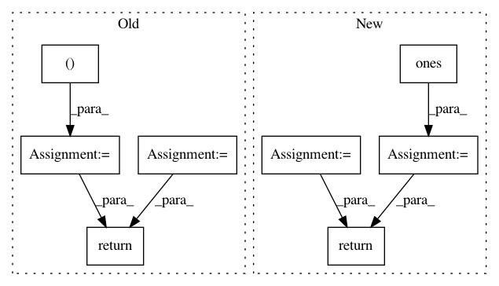

37847c77889e39143034af9fe0d4b92bc74e992a,torch_geometric/datasets/utils/ply.py,,read_ply,#Any#,6
Before Change
x = plydata["vertex"]["x"]
y = plydata["vertex"]["y"]
z = plydata["vertex"]["z"]
vertices = np.stack((x, y, z), axis=1)
faces = make2d(plydata["face"]["vertex_indices"])
faces = faces.astype(np.int64)
// Conver to torch tensors.
vertices = torch.FloatTensor(vertices)
faces = torch.LongTensor(faces)
return vertices, faces
After Change
y = torch.FloatTensor(plydata["vertex"]["y"])
z = torch.FloatTensor(plydata["vertex"]["z"])
pos = torch.stack([x, y, z], dim=1)
input = torch.ones(pos.size(0))
face = torch.LongTensor(make2d(plydata["face"]["vertex_indices"]))
index = edges_from_faces(face)
return Data(input, pos, index, None, None)
In pattern: SUPERPATTERN
Frequency: 3
Non-data size: 8
Instances
Project Name: rusty1s/pytorch_geometric
Commit Name: 37847c77889e39143034af9fe0d4b92bc74e992a
Time: 2018-03-02
Author: matthias.fey@tu-dortmund.de
File Name: torch_geometric/datasets/utils/ply.py
Class Name:
Method Name: read_ply
Project Name: geomstats/geomstats
Commit Name: 01f89728c64359c3b19d89cce475d50c4f902311
Time: 2020-04-04
Author: nicolas.guigui@inria.fr
File Name: geomstats/geometry/symmetric_matrices.py
Class Name: SymmetricMatrices
Method Name: symmetric_matrix_from_vector
Project Name: nipy/dipy
Commit Name: f698c4dbfc266bae9c1d1ceb0d906863c9b54e2e
Time: 2013-05-14
Author: caruyer@gmail.com
File Name: dipy/core/sphere_stats.py
Class Name:
Method Name: random_uniform_on_sphere